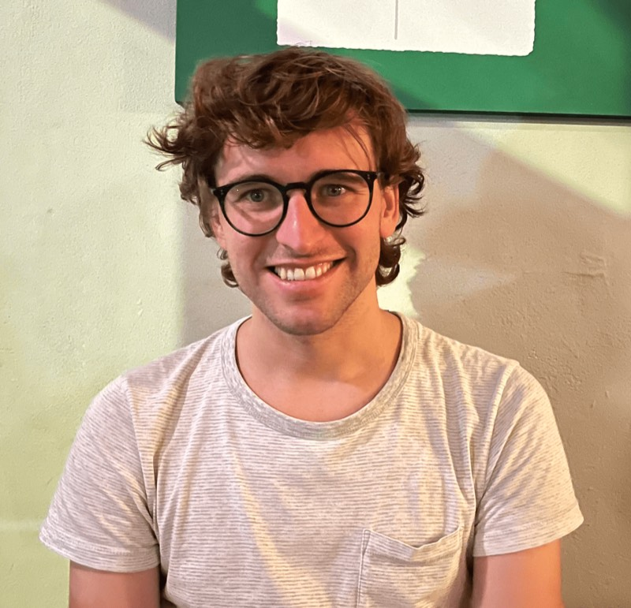

Nicolas Lanzetti
postdoctoral researcher
Computing and Mathematical Sciences
Caltech
Annenberg 203, Caltech
Pasadena, CA, USA
research interests
Artificial intelligence is rapidly evolving into a decision-maker in critical business and societal infrastructures, such as energy markets and autonomous mobility. However, while these domains are strategic, uncertain, and dynamic, AI systems are still largely designed in static and controlled environments. My research addresses this fundamental tension by developing the mathematical and algorithmic foundations for reliable AI-driven decision-making in the wild, and by studying its societal impact. To do so, I draw on and contribute to operations research, artificial intelligence, and control theory.
bio
I am a postdoctoral researcher in the department of Computing and Mathematical Sciences at Caltech, hosted by Prof. Adam Wierman, Prof. Eric Mazumdar, and Prof. Steven Low. Previously, I was a PhD student at the Automatic Control Laboratory at ETH Zürich under the supervision of Prof. Florian Dörfler (main advisor) and Prof. Alessio Figalli (second advisor). I was part of NCCR Automation. I received my BSc and MSc from ETH Zürich in 2016 and 2019, respectively. During my studies, I visited the Massachusetts Institute of Technology and wrote my Master's thesis at Stanford University, in Prof. Marco Pavone's Autonomous Systems Lab. In summer 2024, I was an intern in quantitative research at Citadel GQS.
selected publications
latest news
| September 2026 | Two papers accepted at NeurIPS 2026: one on training generalizable collaborative agents via strategic risk aversion (oral presentation), and one on a separation principle for cooperative multi-agent reinforcement learning. |
|---|---|
| September 2026 | I was selected as a Rising Star in Data Science by the University of Chicago, Harvard, UC San Diego, and Stanford. |
| September 2026 | I was selected as a speaker at the 2026 Young Researchers Workshop at Cornell ORIE. |
| September 2026 | Together with Riccardo Cescon and Andrea Martin, I am co-organizing a workshop on distributionally robust optimization for control, learning, and games at CDC 2026. Join us in Honolulu in December! |
| July 2026 | Our papers on strategically robust linear quadratic dynamic games and on strategically robust game-theoretic multi-agent trajectory optimization got accepted at CDC 2026. |
| March 2026 | Together with Riccardo Bonalli and Thomas Lew, I am co-organizing a workshop on uncertainty-aware control at ECC 2026. Join us in Reykjavík in July! |
| March 2026 | How to optimally steer a distribution with only a few controllable agents? Check out our new preprint. |
| February 2026 | In our new preprint, we use strategic risk aversion/robustness to train AI agents in collaborative multi-agent settings. |
| February 2026 | I received the SAND Award at the Information Theory and Applications Workshop. |
| January 2026 | Our paper on the identification of gradient-flow SDEs was accepted at AISTATS 2026. |
| January 2026 | Our paper on hedging against black swans in day-ahead energy markets using distributionally robust optimization was accepted at PSCC 2026. |
older news
| October 2025 | I was selected as one of the NeurIPS top reviewers! |
|---|---|
| October 2025 | New preprint on hedging against black swans in day-ahead energy markets, using distributionally robust optimization. |
| October 2025 | I have started my postdoc at Caltech! |
| August 2025 | I successfully defended my PhD! |
| July 2025 | New preprint on strategically robust game theory. In multi-agent decision-making settings, how can agents be robust to one another's strategies? |
| February 2025 | Our paper Distributional uncertainty propagation via optimal transport has been accepted for publication in the IEEE Transactions on Automatic Control. |
| November 2024 | In our new preprint, we show that linear feedback policies are optimal for the distributionally robust LQG problem, when the process and measurement noise distributions are independent, stationary, and belong to a Wasserstein ball around a Gaussian reference distribution. |
| October 2024 | Our paper Learning Diffusion at Lightspeed was accepted at NeurIPS for oral presentation! In the meantime, we also open-sourced the code. Check it out! |
| October 2024 | Our paper Fairness in Social Influence Maximization via Optimal Transport was accepted at NeurIPS 2024. See you in Vancouver! |
| June 2024 | In our new preprint, we study very general optimality conditions for optimization in the probability space. What are they good for? For instance, to learn diffusion processes at lightspeed. You can find the preprints here and here. |
| June 2024 | How to ensure that the outcome of news-spreading mechanisms is fair across groups? In our new preprint, we propose a novel highly expressive fairness metric and propose an algorithm to efficiently and fairly select early adopters. |
| June 2024 | Our paper on first-order conditions for optimization in the Wasserstein space was accepted in the SIAM Journal on Mathematics of Data Science. |
| June 2024 | I will spend the summer in New York City working as intern in quantitative research at Citadel GQS. If you are in NYC, get in touch! |
| May 2024 | Incredibly proud of my students Antonio Terpin and Sylvain Fricker for being awarded the ETH medal for their outstanding Master's thesis. |
| January 2024 | Our research on the impact of recommendation systems on opinion dynamics has been published with the Montreal AI Ethics Institute as a part of their research summaries initiative. Check it out! |
| December 2023 | I will present our work on the impact of recommendation systems on opinion dynamics at the 62nd IEEE Conference on Decision and Control (CDC). See you in Singapore! |
| November 2023 | Our paper Dynamic Programming in Probability Spaces via Optimal Transport has been accepted for publication in the SIAM Journal on Control and Optimization. |
| October 2023 | Our paper On the Interplay between Self-Driving Cars and Public Transportation has been accepted for publication in the IEEE Transactions on Control of Network Systems. |
| July 2023 | Two papers accepted at the 62nd IEEE Conference on Decision and Control (CDC). See you in December in Singapore! |
| March 2023 | How to optimally steer a fleet of identical agents or probability distributions? In our new preprint, we show that many optimal control problems in probability admit a separation principle: The solution of dynamic programming in probability spaces results from (i) the solution of dynamic programming in the "ground space" (i.e., the space on which the probability measures live), and (ii) the solution of an optimal transport problem. |
| March 2023 | Our paper Stochastic Wasserstein Gradient Flows using Streaming Data with an Application in Predictive Maintenance was accepted at the 22nd IFAC World Congress. See you in July in Japan! |
| November 2022 | Our paper Co-Design to Enable User-Friendly Tools to Assess the Impact of Future Mobility Systems has been accepted for publication in the IEEE Transactions on Network Science and Engineering. |
| October 2022 | How to measure closeness between policies in reinforcement learning? In our new NeurIPS paper, we use optimal transport to define similarity between policies and to define trust regions for efficient and stable policy optimization... and it works! See here for a 5 minutes teaser! |
| September 2022 | Can we do calculus in the probability space? In our new preprint, we derive first-order conditions for optimality in probability spaces using optimal transport. |
| August 2022 | Our paper Modeling of Political Systems using Wasserstein Gradient Flows was accepted at the 61st IEEE Conference on Decision and Control (CDC). |
| June 2022 | I am honored to receive the Outstanding Teaching Assistant Award. |
| April 2022 | How to capture and propagate uncertainty about probability distributions (aka distributional uncertainty)? In our new preprint, we use tools from optimal transport to study how complex systems shape distributional uncertainty. |
| September 2021 | We are honored that our paper Game Theory to Study Interactions between Mobility Stakeholders won Best Paper Award (1st Place) at the 24th IEEE International Conference on Intelligent Transportation Systems (ITSC). |
| July 2021 | Our paper Analysis and Control of Autonomous Mobility-on-Demand Systems: A Review was accepted to the Annual Review of Control, Robotics, and Autonomous Systems. |
| June 2021 | We have a new preprint: Check it out here. |
| June 2021 | Our paper Game Theory to Study Interactions between Mobility Stakeholders was accepted at the 24th IEEE International Conference on Intelligent Transportation Systems (ITSC). |
| April 2021 | We have a new preprint: Check it out here. |
| December 2020 | I am honored to receive the 2020 SVOR/ASRO award for the best Master's thesis. |
| June 2020 | I am honored to receive the ETH Medal and the Willi Studer Prize. |
| May 2020 | Our paper On the Co-Design of AV-Enabled Mobility Systems was accepted at the 23rd IEEE International Conference on Intelligent Transportation Systems (ITSC). |
| April 2020 | We have a new preprint: Check it out here. |
| November 2019 | I presented our work on game-theoretic models for self-driving cars at the INFORMS Annual Meeting in Seattle. |